Vào lúc 23h30 tối qua (28/05) Google chính thức khai mạc Hội nghị Phát triển Thường niên Google I/O 2015 với Android M - một phiên bản sửa lỗi và tăng cường độ ổn định, Android Wear, Brillo - phiên bản Android cho thiết bị IoT, Weave - Ngôn ngữ giúp các thiết bị Brillo giao tiếp với nhau, Google Now, dịch vụ ảnh Google Photos
I. Android M:
Phiên bản tiếp theo của Android sẽ là một bản cập nhật sửa các lỗi còn tồn đọng trên Lollipop như quản lí bộ nhớ RAM, thời lượng pin và tăng cường tính ổn định.
1.App Permission:
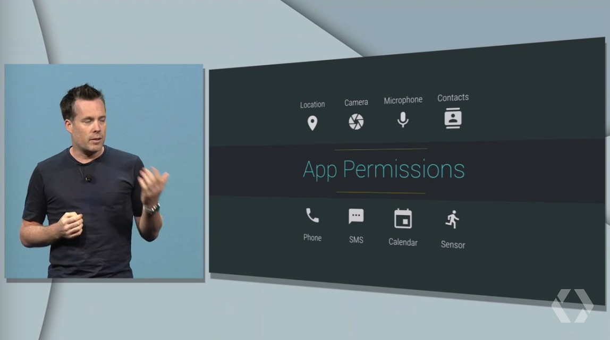
App Permission là một tính năng mới giúp người dùng có thể tuỳ chỉnh các quyền truy cập (vào tin nhắn, gọi điện, camera,..) của ứng dụng. Ví dụ bạn sẽ có thế tắt quyền gọi điện, nhắn tin trên các app không cần thiết như chỉnh sửa ảnh. Và điều này được thực hiện trong Android chứ không cần các hãng sản xuất làm app quản lí nữa.
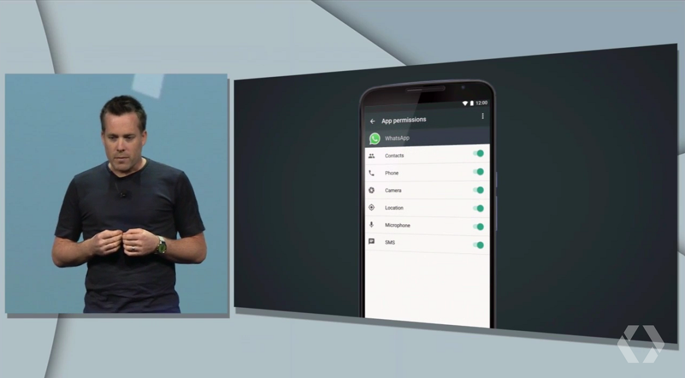
Giờ bạn có thể bật/tắt các quyền truy cập với giao diện dễ sử dụng
2. Chrome Custom Tabs:
Đây là một tính năng tích hợp web và app. Nó sẽ giúp lưu dữ liệu, lưu password, điền form một cách tự động trên giao diện của ứng dụng. Ví dụ bạn sẽ có thể đăng nhập vào app facebook một cách nhanh chóng giống như bạn đăng nhập tự động vào facebook trên web (tính năng lưu password trên trình duyệt)
Ngoài ra Chrome Custom Tabs sẽ cho phép việc mở trang web bên trong ứng dụng trở nên đẹp mắt hơn, đầy đủ hơn. Giống như bạn mở một đường link trên app facebook, nó sẽ dẫn bạn đến webview của app facebook, tuy nhiên nó khá lag và nhiều khi không hỗ trợ tốt Flash khi xem video. Nhưng khi dùng Chrome Custom Tabs sẽ giúp trang web hiển thị đầy đủ các thành phần mà không cần mở bằng Chrome.
3. Khả năng liên kết web và ứng dụng tốt hơn:
Bạn có hay bị tình trạng mở đường link của facebook như bài đăng, tường của ai đó,... nhưng nó lại không ổn định. Lúc thì vào app facebook, lúc thì vào web định dạng cho điện thoại? Điều này sẽ không còn xẩy ra nữa. Với một số bổ sung trong hàm API của Android. Bạn có thể mở một đường link của app nào đó, sau đó vào thẳng trong app luôn.
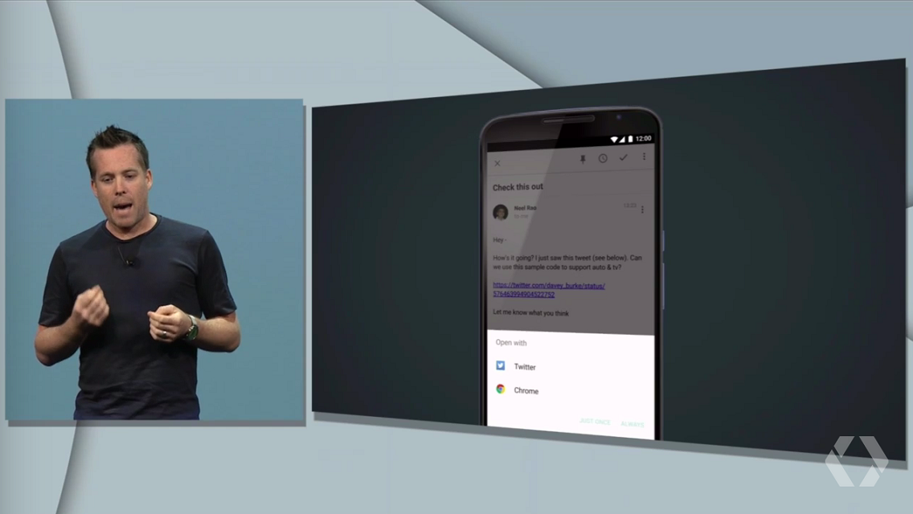
Một ví dụ về app Twitter, khi bạn vào một đường link của twitter như bài tweet, nó sẽ mở ngay bài tweet đó trên app Twitter
Ngoài ra, khi bạn share một đường link của Twitter, Android sẽ tự động chuyển sang app Twitter, chúng ta không cần chọn thủ công như trước
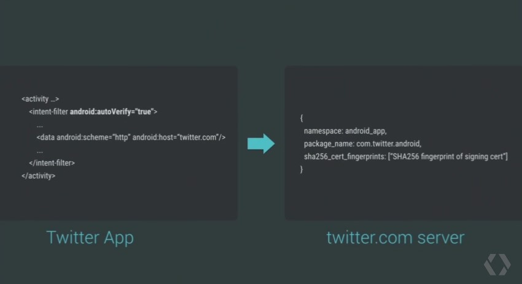
Một ví dụ liên kết nội dung giữa app Twitter và server Twitter
4. Android Pay:
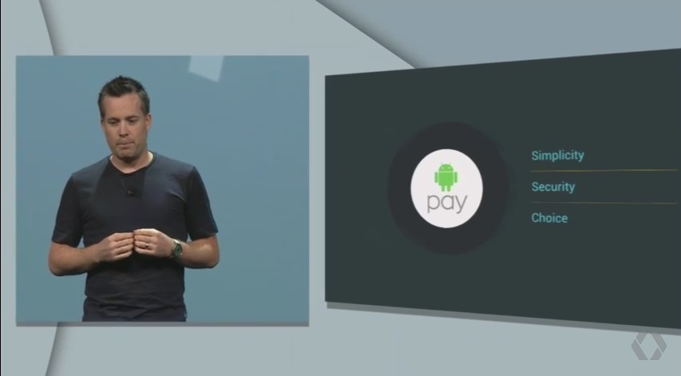
Google đã chính thức nói lời tạm biệt với Google Wallet và chào đón một phương thức mới trong lĩnh vực mua sắm trực tuyến - Android Pay. Cách hoạt động của Android Pay tương tự như Apple Pay, tuy nhiên Android Pay được phát triển theo dạng nền tảng mở cho phép các dịch vụ khác nhau tự do phát triển các phương thức thanh toán khác nhau.
5. Bảo mật vân tay:
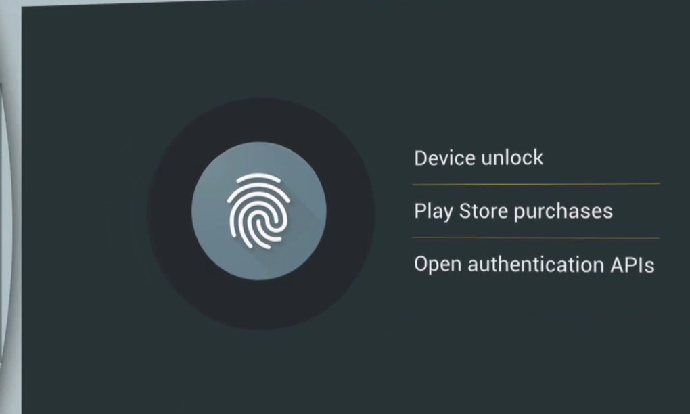
Android M chính thức hỗ trợ bảo mật sinh trắc học. Điều mở ra một tương lai bảo mật an toàn hơn khi bảo mật vân tay sẽ không còn dành cho những chiếc Smartphone cao cấp nữa.
Ngoài việc sử dụng vân tay để mở khoá, Google còn cho phép bảo mật để thanh toán trên CH Play hay mua sắm trực tuyến. Điều này rất giống với Apple Pay, bạn chỉ cần cài đặt thẻ tín dụng cùng với vân tay, khi cần mua app hay mua sắm trên Amazon, chỉ cần xác nhận bằng vân tay là đã có thể mua hàng, thật nhanh chóng và an toàn.
6. Giảm mức tiêu thụ điện năng:
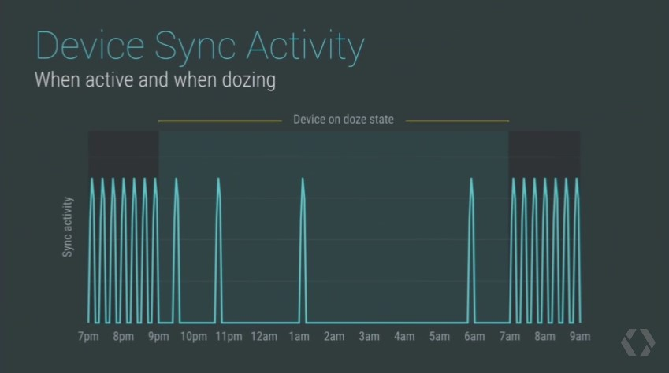
Trên Lollipop, có 2 thứ làm người dùng cảm thấy khó chịu là máy sử dụng khá chậm, quản lí RAM chưa tốt và pin rất hao. Google đã hiểu được và khắc phục nhược điểm về quản lí năng lượng trên Android M. Hứa hẹn thời lượng sử dụng trên Android M sẽ tăng gấp 2 lần so với Lollipop.
7. USB-C được tích hợp sẵn:
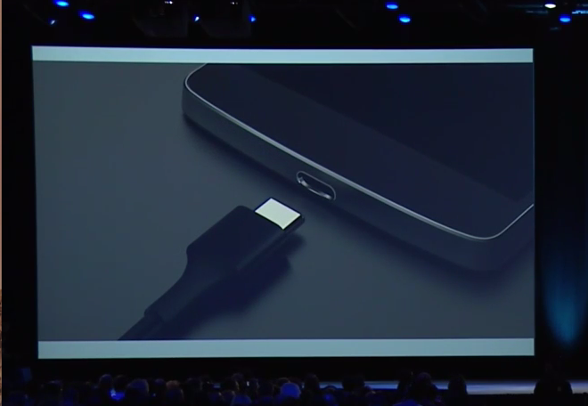
USB-C là một chuẩn mới thay thế chuẩn B với điểm cải tiến là phần jack cắm được làm cân đối cả hai mặt giúp việc cắm vào thiết bị trở nên đơn giản hơn. Tuy nhiên từ trước tới nay Google không bao giờ tích hợp một driver thiết bị nào, các hãng sản xuất điện thoại phải tốn nhiều thời gian để viết driver cho các kinh kiện hoạt động. Lần này trên Android M, Google đã tích hợp sẵn driver của USB-C, bớt đi gánh nặng viết phần mềm và hi vọng làm tăng tiến độ cập nhật Android hơn.
Android M sẽ được phát hành ngày hôm nay cho Nexus 5, 6, 9 và Nexus Player, xem hướng dẫn cách download và cài đặt ở
đây.
II. Android Wear:
Phiên bản Android dành cho Smartwatch đã được Google giới thiệu hồi I/O 2014. Tuy nhiên vẫn còn rất nhiều hạn chế về tính năng và trước sự đê doạ từ Apple Watch, có lẽ Google muốn có nhiều tính năng tiện lợi hơn.
Chế độ Always On, cho phép luôn hiện thị các thông báo của tất cả các ứng dụng, kể cả Google Apps và các app bên thứ ba.

Ngoài ra, Android Wear còn cho phép sử dụng cử chỉ cổ tay để thao tác, vẽ các biểu tượng Emoji và giao diện mới thao tác nhanh hơn.
III. Android cho IoT:
Google cũng không bỏ qua thị trường Internet of Things đang được khai thác bởi rất nhiều hãng như Microsoft, Samsung, LG,... với sử xuất hiện của Brillo - bản Android dành cho các thiết bị IoT và Weave - ngôn ngữ giúp các thiết bị Brillo giao tiếp với nhau.
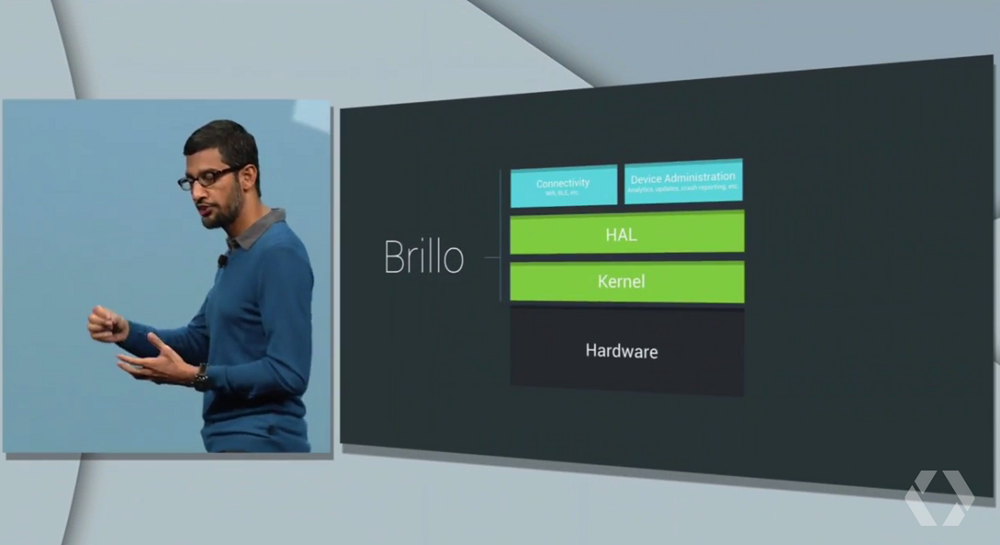
Cấu trúc của Brillo
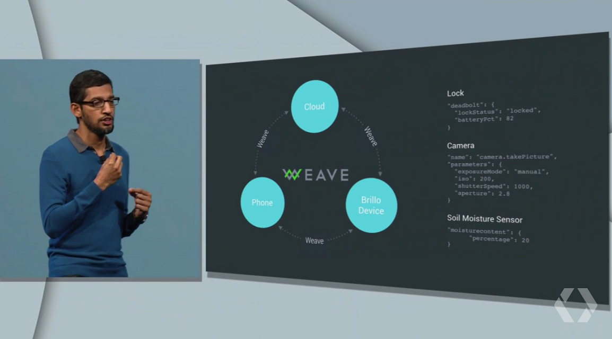
Quan hệ giữa Brillo, Weave và thiết bị Android
Bạn cũng có thể sử dụng điện thoại Android để dò tìm và điều khiển các thiết bị Brillo.
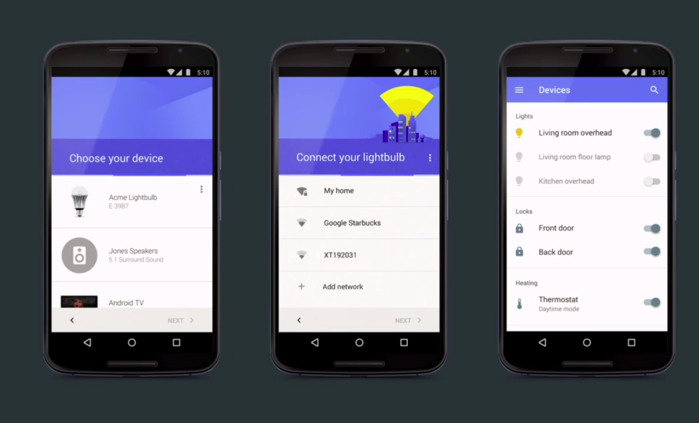
Dự kiến Brillo và Weave dành cho lập trình viên sẽ phát hành lần lượt và Q3 và Q4 năm 2015.
IV. Google Now thông minh hơn:
Google Now trên Android là thành phần tiếp theo mà Google cải tiến để làm nó thông minh hơn. Ví dụ bạn có một chuyến bay, nó sẽ hiển thị chi tiết lịch trình bay, giá vé, thời gian,... hay khi bạn ở địa điểm nào đó, nó cũng sẽ hiển thị chi tiết các điểm đến gần nhất, dịch vụ tại địa điểm đó.
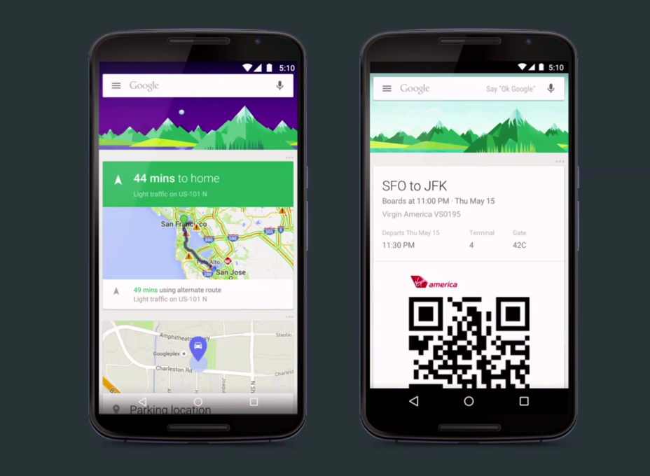
Google Now còn có thể phân tích ngữ cảnh khi đang sử dụng thiết bị. Ví dụ như bạn đang gọi điện cho đối tác và cần ghi số điện thoại, Google Now sẽ nhận biết số điện thoại và hiện thị số đó ngay lập tức, bạn có thể lưu vào danh bạn ngay hay gọi điện vào số đó, không cần phải ghi ra giấy nữa.
Google Now khá thông minh khi giờ đây bạn có thể tìm tên ca sĩ đang hát bài nhạc.

V. Dịch vụ ảnh Photos:
Đây là một dấu hiệu cạnh tranh với Instagram của Facebook sau khi thấy sự kết hợp giữa Google+ và Google Photos không có nhiều kết quả.
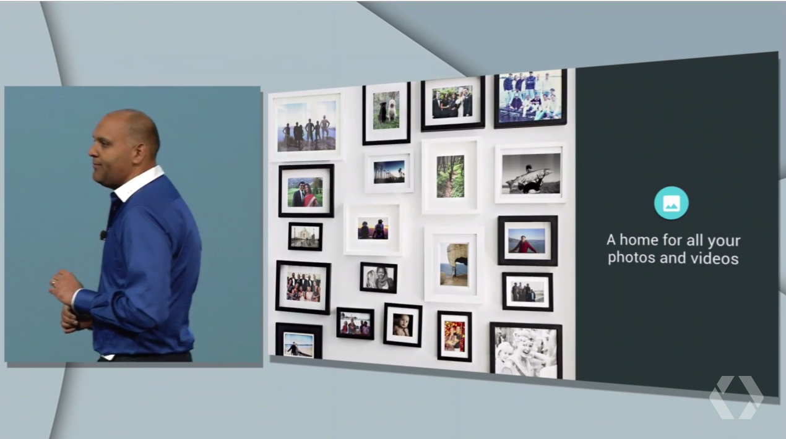
App Photos có nhiều cải tiến như khả năng zoom để hiển thị ảnh theo thời gian xa hơn như tháng hay năm, tự động nhận diện khuôn mặt dựa trên thông tin của Contact hay Google+, một số tính năng đã có trên G+ nay chuyển hẳn sang Photos như tìm kiếm ảnh bằng miêu tả, chia sẻ ảnh chất lượng cao qua mọi mạng xã hội hay dán một đường link.
Điều đặc biệt nhất là bạn có thể chứa ảnh vào video độ phân giải cao và dung lượng không giới hạn và hoàn toàn miễn phí.
Google Photos sẽ được phát hành ngày hôm nay.
VI. Kết:
Google I/O năm nay mang đậm tính nâng cấp thêm về tính năng, giúp các dich vụ của Google thêm hoàn thiện và ổn định hơn. Tuy nhiên Google vẫn phải cố gắng hết sức mình để ngăn chặn hiện tượng phân mảnh giúp trải nghiệm của người dùng được cải thiện hơn.


.png)


.png)
{kind=link}
{kind=link}
{kind=link}
{kind=link}
{kind=link}
{kind=link}
{kind=link}
{kind=link}
{kind=link}
{kind=link}
{kind=link}
{kind=link}
{kind=link}